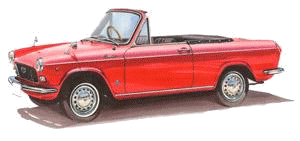
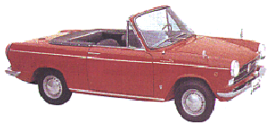
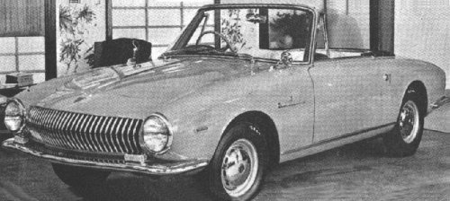

Carrozzeria Vignale · Daihatsu
Daihatsu by Vignale


1965 Daihatsu Compagno Spider
The Compagno was available as a 2 door sedan and as a Spider. It had either a 797cc 41hp engine or a 958cc 55hp engine. In 1967 Daihatsu merged with Toyota.

1964 Daihatsu Sport Cabriolet Prototype
This car was shown on the Vignale stand at the Turin motor show in 1964. It never went into production.
Books
The book ‘The Complete History of the Japanese Car’ says that the ‘Daihatsu 1000’ was designed by Vignale. The second generation Compagno has a 958cc engine, so this is probably what they are referring to.
Further reading
The ‘Motor Magazine International’ from the mid 1970s featured an article that talked about the different Japanese car makers that employed European designers in the 1960s. It was called ‘A few thoughts on Japanese car design’. Of course Vignale was mentioned as well. Other European designers were:
- Pininfarina: 1964 Datsun Bluebird and 1966 Nissan Cedric
- Albrecht Goertz: Nissan Silvia
- Bertone: Mazda 1500
- Michelotti: Hino Contessa and Prince Skyline Sport
- Ghia: Isuzu 117 coupe
Many thanks to Alan Bent for text and images. Please also visit his Early Datsun Homepage.